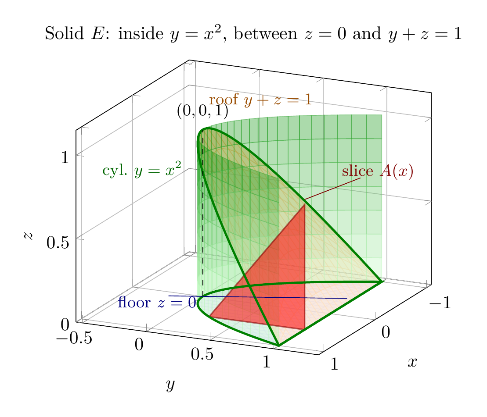
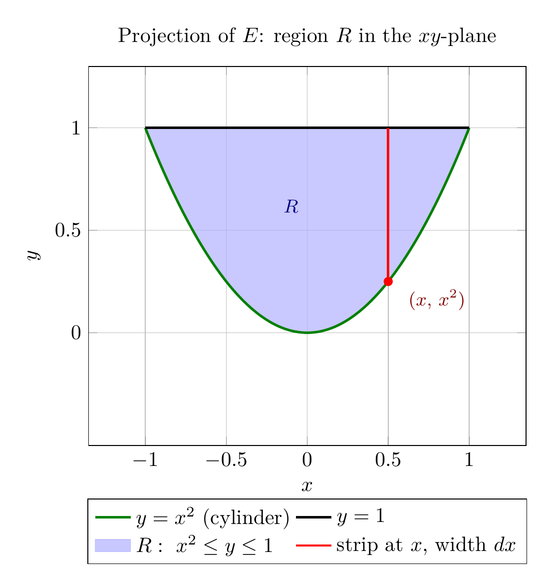

Please solve the problem in the following image.
(Image `20260928_172606_808802_utc_0800_0.png`. Alt text: Image: human_20260928_172606_808802_utc_0800)
20260928_172606_808802_utc_0800_0.png
End of problem
Answer
# Volume of the Solid Enclosed by $y=x^2$, $z=0$, and $y+z=1$
## Setting Up: Describe the Solid $E$
The solid is bounded by three surfaces:
- **Floor:** the plane $z = 0$ (the $xy$-plane),
- **Roof:** the plane $y + z = 1$, i.e. $z = 1 - y$,
- **Walls:** the parabolic cylinder $y = x^2$ (a cylinder along the $z$-direction whose cross-section is a parabola in the $xy$-plane).
The roof $z = 1-y$ meets the floor $z=0$ along the line $y = 1$. Inside the cylinder $y \ge x^2$, this forces $x^2 \le y \le 1$, so $-1 \le x \le 1$. Hence
$$
E = \bigl\{(x,y,z) \;:\; -1 \le x \le 1,\quad x^2 \le y \le 1,\quad 0 \le z \le 1-y \bigr\}.
$$
The figure below shows the solid: the green parabolic wall $y=x^2$, the orange roof plane $y+z=1$, the blue floor $z=0$, and (in red) a representative vertical slice at $x = 0.5$.
---
\documentclass[border=10pt]{standalone}
\usepackage{pgfplots}
\pgfplotsset{compat=1.16}
\begin{document}
\begin{tikzpicture}
\begin{axis}[
view={115}{22},
xlabel={$x$}, ylabel={$y$}, zlabel={$z$},
xmin=-1.1, xmax=1.1, ymin=-0.55, ymax=1.35, zmin=0, zmax=1.15,
ztick={0,0.5,1}, grid=major,
title={Solid $E$: inside $y=x^2$, between $z=0$ and $y+z=1$},
]
% Floor z = 0 over region R
\addplot3[surf, shader=flat, opacity=0.4,
colormap={blues}{color=(blue!12) color=(blue!50)},
domain=-1:1, samples=25, y domain=0:1, samples y=10]
({x}, {x^2 + (1 - x^2)*y}, {0});
% Roof plane z = 1 - y over region R
\addplot3[surf, shader=flat, opacity=0.5,
colormap={oranges}{color=(orange!22) color=(orange!70)},
domain=-1:1, samples=25, y domain=0:1, samples y=10]
({x}, {x^2 + (1 - x^2)*y}, {1 - x^2 - (1 - x^2)*y});
% Parabolic cylinder wall y = x^2
\addplot3[surf, shader=flat, opacity=0.35,
colormap={greens}{color=(green!22) color=(green!55!black)},
domain=-1:1, samples=40, y domain=0:1, samples y=8]
({x}, {x^2}, {y});
% Cross-sectional slice at x = 0.5 (right triangle)
\addplot3[fill=red, opacity=0.55, draw=red!50!black, thick]
coordinates {(0.5,0.25,0) (0.5,1,0) (0.5,1,0.75) (0.5,0.25,0)};
% Parabola edges
\addplot3[green!50!black, very thick, domain=-1:1, samples=50] ({x}, {x^2}, {0});
\addplot3[green!50!black, very thick, domain=-1:1, samples=50] ({x}, {x^2}, {1-x^2});
% Vertical dashed segment at origin
\addplot3[dashed, black] coordinates {(0,0,0) (0,0,1)};
% Labels with leader lines
\node[anchor=east, text=orange!60!black] at (axis cs:-0.9,0.55,1.06) {\small roof $y+z=1$};
\node[anchor=west, text=blue!50!black] at (axis description cs:0.10,0.18) {\small floor $z=0$};
\draw[blue!50!black] (axis description cs:0.26,0.20) -- (axis cs:-0.45,0.95,0);
\node[anchor=east, text=red!50!black] at (axis description cs:0.97,0.62) {\small slice $A(x)$};
\draw[red!50!black] (axis description cs:0.80,0.60) -- (axis cs:0.5,1,0.78);
\node[anchor=east, text=green!40!black] at (axis cs:-0.85,-0.45,0.55) {\small cyl.\ $y=x^2$};
\node[anchor=south] at (axis cs:0,0,1.02) {\small $(0,0,1)$};
\end{axis}
\end{tikzpicture}
\end{document}

pgfplots_0.png
---
## Step 1: Project $E$ onto the $xy$-Plane
The shadow (projection) of $E$ on the $xy$-plane is the region
$$
R = \bigl\{(x,y) : -1 \le x \le 1,\; x^2 \le y \le 1 \bigr\},
$$
the area between the parabola $y = x^2$ and the line $y = 1$ (they meet at $x = \pm 1$, since $x^2 = 1$). The red vertical strip below shows why $x$ runs from $-1$ to $1$ and $y$ runs from the parabola up to the line.
---
\documentclass[border=10pt]{standalone}
\usepackage{amsmath}
\usepackage{pgfplots}
\usepgfplotslibrary{fillbetween}
\pgfplotsset{compat=1.16}
\begin{document}
\begin{tikzpicture}
\begin{axis}[
width=9cm, height=8cm,
xlabel={$x$}, ylabel={$y$},
xmin=-1.35, xmax=1.35, ymin=-0.55, ymax=1.3,
xtick={-1,-0.5,0,0.5,1}, ytick={0,0.5,1},
grid=major, title={Projection of $E$: region $R$ in the $xy$-plane},
legend style={at={(0.5,-0.14)}, anchor=north, legend columns=2},
legend cell align=left,
]
\addplot[name path=parab, green!50!black, very thick, domain=-1:1, samples=100] {x^2};
\addlegendentry{$y=x^2$ (cylinder)}
\addplot[name path=line, black, very thick, domain=-1:1, samples=2] {1};
\addlegendentry{$y=1$}
\addplot[blue!30, opacity=0.7] fill between[of=parab and line];
\addlegendentry{$R:\ x^2\leq y\leq 1$}
\addplot[red, very thick] coordinates {(0.5,0.25) (0.5,1)};
\addlegendentry{strip at $x$, width $dx$}
\addplot[only marks, mark=*, red] coordinates {(0.5,0.25)};
\node[anchor=west, text=red!50!black] at (axis cs:0.58,0.16) {\small $(x,\,x^2)$};
\node[anchor=south, text=blue!50!black] at (axis cs:-0.1,0.55) {\small $R$};
\end{axis}
\end{tikzpicture}
\end{document}

pgfplots_1.png
---
## Step 2: Write the Triple Integral (order $dz\,dy\,dx$)
For each $(x,y) \in R$, $z$ enters at the floor $z=0$ and leaves at the roof $z = 1-y$. Therefore
$$
V = \iiint_E dV = \int_{-1}^{1}\int_{x^2}^{1}\int_{0}^{1-y} dz\,dy\,dx.
$$
**Inner integral** (height of the solid above $(x,y)$):
$$
\int_{0}^{1-y} dz = 1 - y.
$$
**Middle integral** (area of the $yz$-slice at fixed $x$):
$$
A(x) = \int_{x^2}^{1} (1-y)\,dy = \Bigl[y - \tfrac{y^2}{2}\Bigr]_{y=x^2}^{1} = \tfrac{1}{2} - x^2 + \tfrac{x^4}{2} = \frac{(1-x^2)^2}{2}.
$$
**Geometric check:** at fixed $x$ the slice is a right triangle with legs of length $1 - x^2$ (base along the floor from $y=x^2$ to $y=1$, vertical leg on the plane $y=1$ from $z=0$ up to $z = 1-x^2$), so $A(x) = \frac{1}{2}(1-x^2)(1-x^2) = \frac{(1-x^2)^2}{2}$ — exactly as computed. The largest slice is at $x=0$: $A(0) = \frac{1}{2}$.
---
pgfplots_2.png
---
## Step 3: Integrate Over $x$
$$
V = \int_{-1}^{1} \frac{(1-x^2)^2}{2}\,dx = \frac{1}{2}\int_{-1}^{1} \bigl(1 - 2x^2 + x^4\bigr)\,dx = \frac{1}{2}\Bigl(2 - \frac{4}{3} + \frac{2}{5}\Bigr) = \frac{1}{2}\cdot\frac{16}{15} = \frac{8}{15}.
$$
## Step 4: Independent Check with the Order $dz\,dx\,dy$
Solving $y = x^2$ for $x$ gives $x = \pm\sqrt{y}$, and $y$ ranges over $0 \le y \le 1$:
$$
V = \int_{0}^{1}\int_{-\sqrt{y}}^{\sqrt{y}}\int_{0}^{1-y} dz\,dx\,dy = \int_{0}^{1} 2\sqrt{y}\,(1-y)\,dy = 2\Bigl(\frac{2}{3} - \frac{2}{5}\Bigr) = \frac{8}{15}. \;\checkmark
$$
Both orders agree, and a Monte Carlo simulation ($2\times 10^6$ points, estimate $\approx 0.5338$) confirms the exact value $8/15 \approx 0.5333$.
## Key Takeaways
1. **Identify floor and roof first:** $z$ runs from the lower surface ($z=0$) to the upper surface ($z = 1-y$); these bounds depend on $x,y$ only.
2. **Project to find the base region:** the roof meets the floor where $1-y = 0$, i.e. $y=1$; intersecting with $y \ge x^2$ gives $R = \{-1 \le x \le 1,\; x^2 \le y \le 1\}$.
3. **Choose the order that avoids square roots:** $dz\,dy\,dx$ keeps every bound polynomial, whereas $dx$ forces $x = \pm\sqrt{y}$.
4. **Sanity-check with cross-sections:** the triangular slices $A(x) = (1-x^2)^2/2$ vanish at $x = \pm 1$ and peak at $x = 0$, matching the geometry — then $V = \int A(x)\,dx$ recovers the same result.
$$
\boxed{V = \iiint_E dV = \int_{-1}^{1}\int_{x^2}^{1}\int_{0}^{1-y} dz\,dy\,dx = \frac{8}{15}}
$$